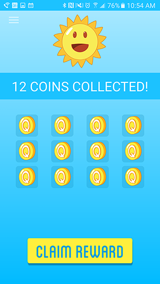
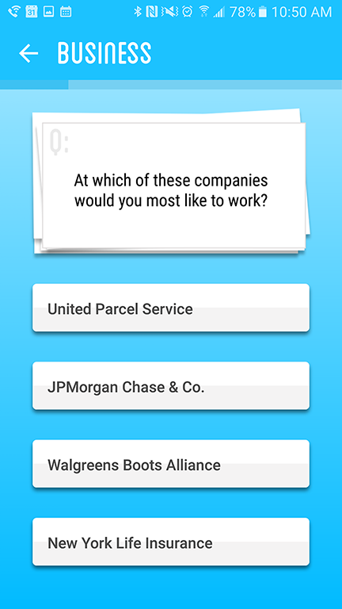
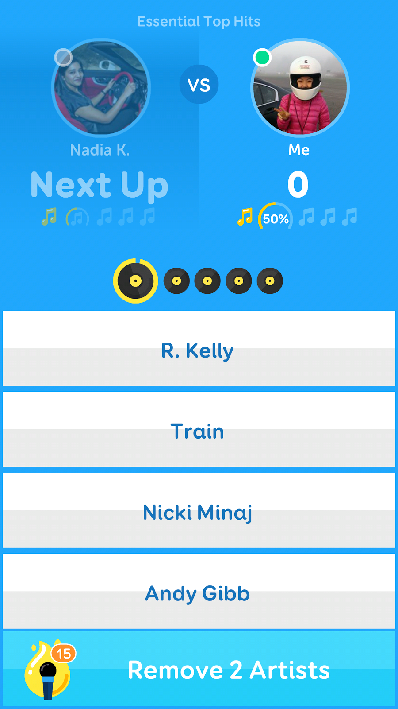

SurveyMonkey Intelligence
Product Management and Design
QuestionCrush is an Android app where users earn rewards for answering surveys. The idea was inspired by SurveyMonkey's core product, surveys.
I lead the product development and design of the app.
Overview
QuestionCrush is an Android app in which users earn rewards for answering surveys. The idea was inspired by SurveyMonkey's core product, surveys. My goal with QuestionCrush was twofold:
- Higher daily and long term retention rates than our other Android apps
- Investigate opportunities for SurveyMonkey to generate a second revenue stream using answers from the surveys
For our product, I was inspired by the gaming space. Google Rewards is one of the big players in the survey reward space; it is designed to look very professional. I took our app in a different direction. I envisioned an app that was more fun and playful. My hypothesis is that creating an experience with gaming elements will encourage user engagement.
Design Challenges
How do we gain users trust (without encouraging too much fraudulent behavior)? One of our big challenges is getting users to trust that we will pay out. I designed the reward system to gain their trust initially, and then reduce the payout to meet our budget.
Normally users are required to answer 12 surveys to get a payout. Users can only get one survey per day max meaning it took 12 days to get a payout. For a user's first run though, users only had to answer three surveys, so it was much faster to earn the first reward.
How do we keep users coming back everyday?
One of our goals is to keep users coming back everyday. As mentioned, users get a max of one survey per day, meaning the user had to come back every day. This is very similar to many mobile games today which offer daily rewards. As an alternative, we could have allowed users to answer as many surveys as we have, but this would encourage fraudulent behavior such as tapping the same input for every survey.
There were 2 areas I wanted to focus our design energies
- Adding subtle animations
- Using bright and playful colors (taking inspiration from games)
- 
Users can claim a reward after 12 days.
- 
Buttons animate out after selecting an answer
- 
Songpop was an inspiration
Final Thoughts
The QuestionCrush app had one of our best retention rates among all of our apps. It was successful in keeping users coming back and answering surveys. However I did not use the answers from the survey for other revenue streams. We didn't have all the necessary capabilities for the data to be trustworthy (such as radomizing answers). This was a choice I made when we were developing the ap. The reason I chose not to include those features is so we could ship in a month and a half, and test the idea before investing in the app too much. Now that we know users will come back and answer surveys, as a next step, I would add in more features so we can reduce bias in the data so we can potentially extract more value from the app.
Original Mockups
Below are examples of what the draft mockups for the app looked like